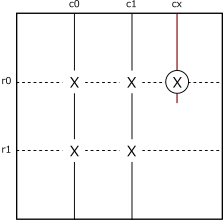
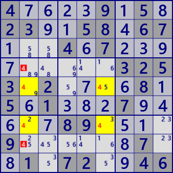
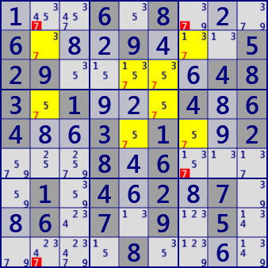

X-Wing（Fish)
Assume that the digit X is arranged as follows.
In column c0, the position of the digit X is one of the rows r01, and also in row c1,
it is either row r01.
At this time, the digit X can be excluded from candidate digits in cell r0cx(○).
This is due to the fact that the four cells of r01c01 are Locked
for the digit X.

X-Wing
In the BaseSet(solid line) column, one of the two cells X is true.CoverSet(dashed line) completely includes BaseSet. CoverSet also contains cells(circles) in addition.
If the digit X at the position of a circle is true, it is not possible to place the digit X at the position of BaseSet.
The digit X at the position of the circle is excluded.(BaseSet, CoverSet described below) 
X-Wing sample
Focusing on the digit 4, the establishment of X-Wing of BaseSet(r57), CoverSet(c26).
The digit 4 is excluded from the cell of r47c2.
4....9.5.23..58.67...4.7.........3253.2....8.5.1...7.....89....9......7..1.72..46"
X-Wing sometimes uses another name, "Fish". Third and higher order fish also have names. For a more general description, we will all use fish below.
- 2nd order: X-Wing
- 3rd order: SwordFish
- 4th order: JellyFish
- 5th order: Squirmbag
- 6th order: Whale
- 7th order: Leviathan
If only to solve a Sudoku, doesn't need Fish of the fifth or higher order.
When Fish of 5th order or higher is established,
Fish of 4th order or less is established at complementary position.
Complementary Fish actually shown below.
In Fish of 3rd order or higher order,
Fish is established even for a pattern where a part is missing as shown in the figure.
This missing part may be a confirmed cell, or there may not be a focused digit just for that cell candidate.
Extensions to several methods are known for Fish based algorithms(treat them below). Define "BaseSet", "CoverSet" as preparation.
BseSet/CoverSet(no overlap)
In Fish based solution, use 2 sets of house.
Focus on the digit X, select N houses containing up to N digits X (N is the order) and call this BaseSet.
The BaseSet does not overlap.
And, choose another set of N House to completely include BaseSet .
call this CoverSet.
The common part of such BaseSet, CoverSet is in Locked.
In House of BaseSet, although somewhere is not decided, one cell is always the digit X.
The same is true for CoverSet. Check Locked with SwordFish(3rd order Fish) on the left.
CoverSet completely contains BaseSet, but it may also contain cells other than BaseSet.
As a solution, including other cells Z is meaningful.
If the cell Z digit X is true, it breaks the BaseSet Locked.
In other words, the digit X can be excluded from the candidate digit of cell Z.
To summarize, it will be as follows.
Nth Fish
Focus on the digit X. If N houses containing N or fewer X are selected(BaseSet) and N other houses(CoverSet) completely contain BaseSet, BaseSet is Locked. Candidate digit X in the position to break Locked can be excluded. It is assumed that there is no overlap between BaseSet and CoverSet.
he following figure is an example of SwordFish (3D-Fish) and JellyFish (4D-Fish).
These are Complementary Fish of the same scene of the same puzzle. Excluded cells·Candidate digits are the same.
(3D-Fish）
BaseSet : c139
CoverSet : r169

JellyFIsh #7
(4D-Fish）
BaseSet : r2345
CoverSet : c2567
...6.8...6...9...529.....483.1...4.64..3.1..2...8.6....1.4.2.7..6.7.9.5.....8....
Fish program
The program solves the FISH using the general-purpose Fish subprogram(ExtFishSub).
ExtFishSub can solve Basic Fish, Finned Fish, (with Fin)Franken/Mutant Fish.
public partial class FishGen: AnalyzerBaseV2{
public FishGen( GNPX_AnalyzerMan AnMan ): base(AnMan){ }
//Fish
public bool XWing(){ return Fish_Basic(2); }
public bool SwordFish(){ return Fish_Basic(3); }
public bool JellyFish(){ return Fish_Basic(4); }
public bool Squirmbag(){ return Fish_Basic(5); }
public bool Whale(){ return Fish_Basic(6); }
public bool Leviathan(){ return Fish_Basic(7); }
public bool Fish_Basic( int sz, bool fin=false ){
int rowSel=0x1FF, colSel=(0x1FF<<9);
for( int no=0; no<9; no++ ){
if( ExtFishSub(sz,no,18,rowSel,colSel,FinnedF:fin) ) return true;
if( ExtFishSub(sz,no,18,colSel,rowSel,FinnedF:fin) ) return true;
}
return false;
}
public bool ExtFishSub( int sz, int no, int FMSize, int BaseSel, int CoverSel, bool FinnedF ){
int noB=(1<<no);
var FMan=new FishMan(this,FMSize,no,sz);
foreach( var Bas in FMan.IEGet_BaseSet(BaseSel) ){ //BaseSet
foreach( var Cov in FMan.IEGet_CoverSet(Bas,CoverSel,FinnedF) ){ //CoverSet
Bit81 FinB81 = Cov.FinB81;
Bit81 ELM =null;
if( FinB81.IsZero() ){ //===== without Fin =====
if( !FinnedF && (ELM=Cov.CoverB81-Bas.BaseB81).Count>0 ){
foreach( var P in ELM.IEGetUCeNoB(pBDL,noB) ){ P.CancelB=noB; SolCode=2; }
if(SolCode>0){
.
. (Solution report code)
.
return true;
}
}
}
else if( FinnedF ){ //===== with Fin =====
Bit81 Ecand=Cov.CoverB81-Bas.BaseB81;
ELM=new Bit81();
foreach( var P in Ecand.IEGetUCeNoB(pBDL,noB) ){
if( (FinB81-ConnectedCells[P.rc]).Count==0 ) ELM.BPSet(P.rc);
}
if(ELM.Count>0){
.
. (Solution report code)
.
return true;
}
}
continue;
}
}
return false;
}
}